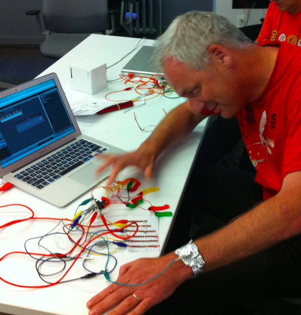

Dit is een uiterst kleine website, die precies voldoet aan de eisen voor een eerste website.
Het is een website met
Deze website is voor een HTML-opdracht van het IJburg College. Hier staat een handleiding hoe je op github zelf zo'n site kan maken en te publiceren.
